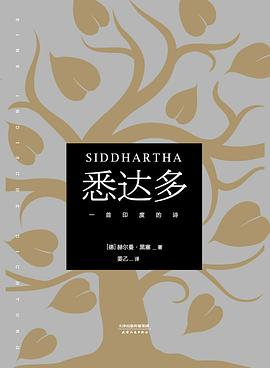

《悉达多》

总体观点
《悉达多》是西方现代精神危机与东方古老智慧最神圣的交融之作。赫尔曼·黑塞借佛陀时代的同名婆罗门青年悉达多，向世人阐释了一个惊世骇俗的真理：“知识可以传授，但智慧只能通过亲身肉体实践去体验。”任何现成的宗教教义或导师言论，都无法替代个体在尘世泥淖中的亲历求道。
全书以极其空灵纯粹、如清泉流淌的散文诗笔调，展现了悉达多从抛弃祭司苦修、离开世尊乔达摩，到投身名利场与名妓卡玛拉翻云覆雨、成为富商大贾，再到在物欲厌倦濒死之际走向大河。在摆渡人瓦苏德瓦身旁，悉达多从奔流不息、包含世间一切哭泣与欢笑的大河流水声中，最终体悟到“善与恶、过去与未来、生与死本为一体”的万物大圆满。
核心观点
-
1. 知识可以言说传授，但智慧唯有亲身经验
人们能够从先贤导师那里学习知识与教义戒律，但关乎灵魂解脱的真正智慧，绝不能通过说教获得，必须亲自走入世俗经历迷失、痛苦与幻灭。
悉达多在舍卫城遇见万民景仰的佛陀乔达摩，虽然被佛陀的崇高圆满折服，却依然拒绝留下来成为信徒，决然离开去寻找自己的道路。 -
2. 走向红尘泥淖：没有堕落过就无法真正超拔
纯粹在象牙塔或修道院里的洁身自好是虚幻脆弱的；唯有真正品尝过财富、情欲、贪婪与赌博的沉沦之苦，才能在幻灭的深渊中淬炼出真正的觉醒。
悉达多与名妓卡玛拉研习情爱之术，在富商门下日进斗金并沉溺赌博二十年，直到在绝望中听见内心神圣的“唵（Om）”之音方才惊醒出走。 -
3. 时间是一个幻觉：一切都在当下同在
过去、现在与未来并不是先后发生的线性碎片；在宇宙的宏大实相中，罪人当下已是未来的佛陀，幼童当下已蕴含白发，万物在当下圆融具足。
摆渡人瓦苏德瓦指着奔流不息的大河告诉悉达多：河水没有过去与未来，只有当下，只要认识到时间的虚幻，所有的痛苦与恐惧皆化为虚妄。 -
4. 父与子的轮回：爱是最后也是最难斩断的执念
当悉达多面对自己娇生惯养、叛逆逃跑的亲生儿子时，经历了比世俗破产痛苦千百倍的心碎，终于体会到当年自己决然离开老父亲时父亲的深重绝望。
悉达多追逐儿子至森林边缘，最终在河水倒影中认出自己的痛苦与天下所有父母的痛苦同构，学会了在深爱中彻底放手与宽恕。 -
5. 倾听大河：在万物众声喧哗中听见神圣的一
大河的水声包含了世间所有被杀害者的哀鸣、恋人的低语、商人的欢笑与垂死者的叹息；当所有的声音不再被分别心切割，汇聚而成的便是宇宙终极的圆满。
悉达多微笑着注视河面，在挚友侨文达的吻中展现出与佛陀完全相同的永恒平静神圣微笑，完成了生命的无上归一。
全书思维导图 · 知识脉络树
全书结构
-
第一部：婆罗门之子、沙门与乔达摩（告别教条）
悉达多成长于尊贵祭司家族，苦读吠陀经典却内心焦渴；告别父亲加入林中苦修沙门，随后在舍卫城拜见佛陀，决然拒绝成为依附教义的信徒。
悉达多向好友侨文达坦白：“佛陀的教义阐述了法，但他无法把在菩提树下觉悟的那个时刻直接传给你，我必须自己去走。” -
第一部：觉醒（投身感官世界）
离开佛陀后在林间顿悟：不再将感官与肉身视作罪恶的幻象，而是睁开孩童般清澈的双眼重新发现自然山川之美，坚定迈向世俗红尘。
站在大河之畔，悉达多忽然意识到自己不再是一个苦修者，而是一个赤条条来到人间的初生儿，世界瞬间变得绚烂夺目。 -
第二部：卡玛拉、商人与尘世之网（欲望与沉沦）
进城结识倾国名妓卡玛拉，学习男女欢爱之术；受聘于大富商卡马斯瓦弥，在商海中积累巨额财富、沉溺赌博美酒，最终在恶心厌倦中深夜出逃。
在豪华卧房中做了一个金丝雀死在鸟笼里的噩梦，悉达多惊觉自己二十年来在名利场里窒息了灵魂，决然抛下豪宅金银消失在夜色中。 -
第二部：摆渡人、儿子与大河的呼唤（创伤与放手）
濒临自杀之际在河边被神圣“唵”声拯救；拜纯朴的老摆渡人瓦苏德瓦为师学习摇橹与倾听大河；面对逃跑的亲生儿子经历刻骨铭心的爱别离之痛。
卡玛拉在前往拜谒佛陀途中被毒蛇咬死，留下傲慢娇惯的儿子；悉达多用无尽的耐心包容儿子的任性侮辱，在痛彻心扉中悟透轮回。 -
第二部：圆满与侨文达的重逢（终极涅槃）
瓦苏德瓦功德圆满遁入林中；一生追随佛陀教条却始终未得证悟的好友侨文达路过渡口，在悉达多沧桑而宁静的微笑与亲吻中顿悟宇宙万物大统一。
侨文达俯身亲吻悉达多的额头，眼前瞬间浮现出数以千计生灵哭泣、欢笑、相爱与死亡的面孔同时存在，流下敬畏与感动的神圣泪水。